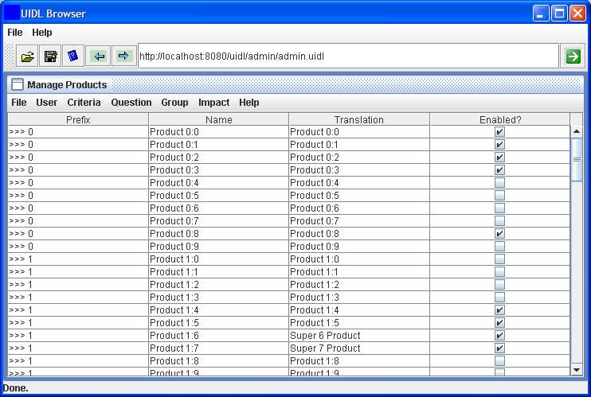
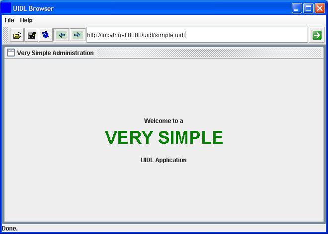

Dominic Cioccarelli.
Traditionally, enterprise applications were built using a client-server approach. As web browsers became more widespread, many application developers preferred to provide a "web interface" as it allowed for transparent deployment of new functionality. This lead to the growth of web applications as we know them today.
The unfortunate side effect of web applications is that web browsers were only ever designed to display static content. This has meant that designing an application to run within a web browser has been a non trivial task and has often lead to applications which are not as responsive or interactive as would have been the case with a rich client version. Thus, whilst web applications provide ease of deployment, they often decrease developer productivity and the overall ease of use of the UI is compromised.
Recognizing the constraints of web browsers, there has been a recent trend towards Rich Internet Applications (RIAs) which aim to harness the ease of deployment of web applications and the rich user experience provided by traditional rich client applications. RIA technology is multi faceted and extends from AJAX applications which "extend" the usefulness of traditional browsers by allowing asynchronous communications (and hence reducing whole page refreshes) to more complex solutions such as Flex / Laszlo which use the Macromedia Flash environment included with most browsers to render the UI.
The UIDL approach is somewhat different in that it uses a Java applet or Java webstart application to act as a pseudo browser environment. This "new" browser is capable of interpreting both HTML and UIDL code, which is basically JavaScript with extensions to allow access to the native windowing system and remote communications.
UIDL hopes to provide the following benefits:
A "universal" client which can run anywhere (in a
browser, on the desktop) and can be used to render applications written in
UIDL. This means that there is no need to worry about deployment or software
upgrades.
Mechanisms for providing easy access to server based
resources. Ideally, applications can be modified to run with a UIDL
interface without extensive additions and without modifying the underlying
code. In many cases an application API can be exposed to transparently allow
"remoting".
An environment which provides high developer productivity. As UIDL is based on JavaScript (an interpreted language) UIDL scripts can be written and tested quickly. The use of a scripted language for the UI encourages the separation of concerns and allows less skilled developers to build the UI whilst the more senior developers concentrate on the more complex code running on the server.
The main distribution site for UIDL releases is http://www.uidl.net/download/. Alternatively, the latest releases are available from the UIDL page on Google code, at http://code.google.com/p/uidl/downloads/list. The SVN repository for the UIDL source code is hosted by Google code at http://code.google.com/p/uidl/source.
The UIDL distribution comes with pre-built UIDL JARs and all supporting JARs. Most of the files in the distribution are not for the UIDL browser itself but rather for the supporting examples (which require things like Spring and Hibernate).
You should unzip the distribution into a local directory. From here you will find the directory structure to be as follows:
The source files for the UIDL browser are located in the /src directory whilst the source files for the example scenarios are are located in the /examples directory. Ant build scripts are provided for both the browser and the examples and are located in the /build directory. A pre-populated Derby database is provided in the /db directory for the "CarSales" example application. The /lib directory contains all the Java libraries required to build either the browser or the example applications. Run time JARs to support the example applications are located in /webapp/WEB-INF/lib.
The /webapp directory contains all the server side code required for the example applications and is also used to server the initial files for the UIDL browser and the subsequent UIDL pages.
To illustrate how simple it is to run a very simple (static) UIDL application, you can simply copy the contents of the /webapp directory to a normal web server. From there you can navigate to the index page (index.html) and run either the Java WebStart or Applet version of the UIDL browser. Once running the browser, you can run any of the static UIDL examples (i.e. those which don't use remoting). These include "simple.uidl" and "converter.uidl".
Obviously, more complex applications will require some interaction with business logic running on the server. As a result, we need to run the server side code for the example applications within a web application container. This can be done in one of two ways:
<Context docBase="C:/cep/uidl/webapp" debug="0" privileged="false" reloadable="true"> </Context>
Irrespective of how you run the UIDL web application, you should edit the "applicationContext.xml" file (in the /WEB-INF directory) to point to the DB directory of where you extracted the UIDL distribution. As mentioned previously, we have included a sample Derby DB for the "CarSales" example. Due to the way the embedded Derby driver works, we need to specify the location of this directory in the JDBC URI, which is located in the Spring "applicationContext.xml", i.e.:
<!-- Configuration for an application managed JDBC datasource -->Alternatively you can configure the data source in your web application server and reference it from the Spring configuration file as follows:
<bean id="carsalesDataSource" class="org.apache.commons.dbcp.BasicDataSource" destroy-method="close">
<property name="driverClassName" value="org.apache.derby.jdbc.EmbeddedDriver"/>
<property name="url" value="jdbc:derby:C:/cep/uidl/db/carsales;create=true"/>
<property name="username" value=""/>
<property name="password" value=""/>
</bean>
<bean id="carsalesDataSource" class="org.springframework.jndi.JndiObjectFactoryBean"> <property name="jndiName" value="java:comp/env/jdbc/carsales"/> </bean>If you don't want to use the pre-configured database, you can get Hibernate to rebuild an empty schema by specifying a new Derby URI and then modifying the Spring configuration as follows:
<property name="hibernateProperties">
<props> <prop key="hibernate.dialect">org.hibernate.dialect.DerbyDialect</prop> <prop key="hibernate.hbm2ddl.auto">create</prop> </props>
</property>
If you intend to modify or recompile the UIDL browser code, you will need to be able to build the uidl.jar file. Note that it is very important to sign all the JAR files which will be loaded when the browser is run as an applet or as a Java Web Start application. This is typically just uidl.jar and js.jar (Rhino).
If you wish to distribute the UIDL browser (or a UIDL application) in a production environment then it is advisable to sign all the required JAR files using a proper digital certificate issued from a trusted certificate authority. The build script (build.xml) can be modified with the appropriate certificate information if required.
The targets available for building the UIDL browser are as follows:
ant -projecthelp Buildfile: build.xml Main targets: classpathInfo Display current application classpath clean Delete built files compile Compile core classes copyResources Copies .properties files to classDir jar Create a .jar file from core classes signedjar Create a .jar file from UIDL browser classes Default target: signedjar
Typically you will compile a new browser by using "ant signedjar". This will produce a new UIDL browser library (uidl.jar) in the /webapp/browser directory. In this way, the browser (either running as a Java WebStart application or as an applet) will pick up the new JAR file the next time it runs.
In order to compile the example applications, a second build script is used. This time the options are as follows:
ant -buildfile examples.xml -projecthelp Buildfile: examples.xml Main targets: classpathInfo Display current application classpath clean Delete built files compile Compile core classes copyResources Copies resources files to classDir jar Create a .jar file from core classes remoteClassJar Create a .jar file for the remote classes war Create a WAR file to deploy the application Default target: jar
The default target (jar) will produce a new JAR file with the class files for the examples in the
/webapp/WEB-INF/lib directory. Depending on how you have configured your web application server, you may need to use the "war" target and redeploy the WAR archive (containing the new examples JAR) to your application server.For some of the remoting examples, the UIDL code needs to have access to both the Java interfaces for the remote object factories / facades and the class files for the actual objects which are transmitted (in serialized form) to the UIDL application (and subsequently translated into JavaScript objects). Rather than passing the entire "examples.jar" file to the client, we produce a much lighter "remoteClasses.jar" which is made available in the /webapp/jar directory. The remoteClassJar target is responsible for producing this file and the classes which it contains are specified in "/build/remoteInterface.txt".
To make use of a UIDL based application, end users must run a UIDL "browser". This is analogous to a web browser except that it interprets and renders the UIDL language rather than HTML (actually it has limited support for HTML rendering as well). It could also be considered as a "universal client" for rich internet applications.
The size of the browser / universal client is quite small (500Kb - 1Mb depending on remoting options) and it only needs to be downloaded once irrespective of the number of UIDL applications with which it is used. Being Java based, the browser will run on any OS which supports a recent Java Virtual Machine.
In order to simplify the (one time) deployment of the UIDL browser, many options have been made available, including:
Stand alone mode. Typically used by developers, where all Java libraries are statically located on the client machine.
Java Web Start mode. This mode makes use of the Java Web Start technology introduced in recent versions of the Sun JRE. Users simply need to click once on the JNLP file describing the UIDL browser and it will be installed on their machine. In addition, if updates to the browser are ever required, these will be transparently loaded by the client each time they run the browser.
Applet mode. For the most transparent deployment, the UIDL browser can be embedded within a standard web browser as a Java applet. Being a signed applet, it will only need to download the constituent libraries once and will cache them locally on the client machine. This means that the page containing the applet will always load quickly. Updates to the browser code will be delivered transparently to clients running in this mode.
The UIDL Browser looks similar to the following picture when run as a Java Web Start application.
When a UIDL page is loaded, the body of the UIDL application is displayed in the browser's content area as follows:

When deployed as a Java WebStart application or Java Applet, one can pass the URL of the UIDL application script to the UIDL browser as a parameter and choose to have the address bar concealed. In this way, the user isn't presented with an address bar or navigation buttons and the specified page loads immediately. Compare the application above with that below:

Browser Running in Embedded Mode
This mode of deployment is recommended for environments where the user will only be accessing a single UIDL based application (and therefore doesn't need the navigation capabilities) or when the UIDL browser is run as an applet and the users may confuse the HTML browser's navigation bar with that of the UIDL browser. This mode of deployment can be thought of as "embedding" the UIDL browser into the UIDL application.
Java Web Start is one of the most convenient ways to run a UIDL based application. It allows for automatic application updating and integration with the user's desktop. An example of a Web Start descriptor (JNLP file) for a UIDL application is as follows
<?xml version="1.0" encoding="utf-8"?> <!-- JNLP File for UIDL Browser --> <jnlp spec="1.0+" codebase="http://www.uidl.net/browser/" href="uidl.jnlp"> <information> <title>UIDL Browser</title> <vendor>www.uidl.net</vendor> <homepage href="docs/help.html"/> <description>UIDL Browser</description> <description kind="short">A browser for displaying rich client applications written in the UIDL syntax.</description> <icon href="images/logo.jpg"/> <offline-allowed/> <shortcut> <desktop/> <menu submenu="UIDL"/> </shortcut> </information> <security> <all-permissions/> </security> <resources> <j2se version="1.3+"/> <jar href="uidl.jar" download="eager"/> <jar href="js.jar" download="eager"/> </resources> <application-desc main-class="net.uidl.Browser"> </application-desc> </jnlp>As with the applet version of the UIDL browser, if you are going to be using Spring remoting, you will need to include some extra libraries, as follows:
<jar href="js.jar" download="eager"/> <jar href="spring-client.jar" download="lazy"/> </resources>If you would like the applet to automatically load a UIDL page (even from a different server) and not display a navigation bar, then you will need to include an extra couple of parameters as follows:
<application-desc main-class="net.uidl.Browser"> <argument>http://localhost:8080/uidl/admin/admin.uidl</argument> <argument>false</argument> </application-desc>Finally, if you would like to load some extra (client side) Java libraries which the UIDL application will make use of, then these can be added to the applet classpath as follows:
<j2se version="1.3+"/> <jar href="uidl.jar" download="eager"/> <jar href="js.jar" download="eager"/> <jar href="TableLayout.jar" download="lazy"/> </resources>Note that external libraries can also be loaded dynamically from within UIDL scripts as follows:
browser.loadRemoteLibrary("myclientlib.jar");Loading libraries from within the JNLP descriptor has the advantage of caching the JAR file and eliminates some
security issues when using signed JAR files, although it is advised to load libraries from within scripts
wherever possible to place the maximum amount of logic within the script itself and reduce external
dependencies.
To embed the UIDL browser in an applet, you will need to include the following code in an HTML page:
<applet name="uidlApplet" codebase="." archive="uidl.jar,js.jar" code="net.uidl.BrowserApplet.class" width="100%" height="95%" alt="No applet"> </applet>
If you would like the applet to automatically load a UIDL page (even from a different server) and not display a navigation bar, then simply include the address of the page as a parameter to the applet as follows:
<applet name="uidlApplet" codebase="." archive="uidl.jar,js.jar" code="net.uidl.BrowserApplet.class" width="100%" height="95%" alt="No applet"> <param name="url" value="http://www.uidl.net/example/carsales.uidl"> <param name="addressBar" value="false"> </applet>Finally, if you would like to load some extra (client side) Java libraries which the UIDL application will make use of, then these can be added to the applet classpath as follows:
<applet name="uidlApplet" codebase="." archive="uidl.jar,js.jar,myclientlib.jar" code="net.uidl.BrowserApplet.class" width="100%" height="95%" alt="No applet"> </applet>Note that external libraries can also be loaded dynamically from within UIDL scripts as follows:
browser.loadRemoteLibrary("myclientlib.jar");Loading libraries from within applet code has the advantage of caching the JAR file and eliminates some
security issues when using signed JAR files, although it is advised to load libraries from within scripts
wherever possible to place the maximum amount of logic within the script itself and reduce external
dependencies.
A UIDL application is basically a JavaScript application which has the possibility of accessing core Java libraries. If you consider JavaScript running within a standard browser, it's power is rather limited as it can only interact with the Document Object Model (DOM) of the HTML page and has no way of interacting with the server (short of recent AJAX extensions). This has relegated JavaScript to a language which has been used for basic tasks such as validating user input or creating dynamic menus or collapsible paragraphs.
By proving JavaScript with access to the windowing system of the host operating system and (via Java Swing) and with access to server based objects (via remoting) very complex and rich applications can be constructed in JavaScript / ECMA script.
Rather than writing a JavaScript interpreter, the UIDL browser environment makes use of the Mozilla "Rhino" interpreter. Rhino is a JavaScript interpreter written in Java. The use of a Java based JavaScript interpreter is important for two reasons:
it provides us with a client platform which will run on most operating systems
it provides easy access to Java objects, allowing for easy expansion of capabilities and interfacing with server environments
More information about Rhino can be found at here.
Just as a typical web browser provides applications with a set of core objects (such as window, history, etc) the UIDL browser provides hosted applications with a set of standard objects and functions. In addition to these "core" objects, any standard library can be used, provided it is made available to the browsers JVM.
The core UIDL Browser objects are the following:
browser: the browser itself. Provides access to the following functions:
include: loads one UIDL page from another (dynamically)
loadRemoteLibrary: dynamically loads a JAR file from the server
frame: an empty JInternalFrame in which the application can use to construct its UI.
hostName: the name of the server from where the UIDL script was loaded
hostPort: the port of the server from where the UIDL script was loaded
hostPrefix: the full URI of the directory from which the UIDL script was loaded
Java packages may be imported by creating aliases as follows:
Event = java.awt.event; Awt = java.awt; Lang = java.lang; Util = java.util; Swing = Packages.javax.swing; Spring = Packages.org.springframework;Note that standard java libraries don't require a "Packages" prefix. Once an alias has been created, new objects may be instantiated as follows:
var button = new Swing.JButton();Alternatively, you can create an alias for a JButton directly as follows:
JButton = Swing.JButton;In which case the code to create a new button would be:
button = new JButton();
As UIDL applications get more complicated, they can grow to the point where a single ".uidl" file is not sufficient to handle the application code. This is where the "import" function of the browser object becomes important. Imaging that we had the above package definitions in a separate file called "packages.uidl". In this case, we could have a second UIDL script in which we made use of the first script as follows:
browser.include("packages.uidl");
button = new JButton();
A simple UIDL application is given below:
Awt = java.awt;
Swing = Packages.javax.swing;
JLabel = Swing.JLabel;
frame.setLayout(new Awt.BorderLayout());
frame.setTitle("Very Simple Administration");
var l = new JLabel(
"<html><p align='center'>Welcome to a<br>" +
"<font size='7' color='green'>VERY SIMPLE</font><br><br>" +
"UIDL Application</p></html>");
l.setHorizontalAlignment(Swing.SwingConstants.CENTER);
frame.add(l);
Which will render as follows:
A more complex currency converter application (albeit slightly out of date) is shown below. Note that in a real version, remoting would be used to perform the currency conversion on the server, thereby using the most up to date exchange rates.
Swing = Packages.javax.swing;
Event = java.awt.event;
Awt = java.awt;
Lang = java.lang;
Util = java.util;
System = Lang.System;
JPanel = Swing.JPanel;
JButton = Swing.JButton;
var labelPrefix = "Amount in Italian lira: ";
function aboutAction(evt)
{
Swing.JOptionPane.showMessageDialog(frame, "Eggs aren't supposed to be green.");
}
function quitAction(evt)
{
System.exit(0);
}
function createComponents()
{
textField = new Swing.JTextField(20);
label = new Swing.JLabel(labelPrefix + "0");
button = new JButton("Convert dollars to lira");
button.setMnemonic(Event.KeyEvent.VK_I);
button.addActionListener(buttonAction)
label.setLabelFor(button);
pane = new JPanel();
pane.setBorder(Swing.BorderFactory.createEmptyBorder(30, 30, 10, 30));
pane.setLayout(new Awt.GridLayout(0, 1));
pane.add(textField);
pane.add(button);
pane.add(label);
return pane;
}
function createMenuBar()
{
jMenuBar = new Swing.JMenuBar();
jMenuFile = new Swing.JMenu();
jMenuFile.setText("File");
jMenuFileExit = new Swing.JMenuItem();
jMenuFileExit.setText("Exit");
jMenuFileExit.addActionListener(quitAction);
jMenuHelp = new Swing.JMenu();
jMenuHelp.setText("Help");
jMenuHelpAbout = new Swing.JMenuItem();
jMenuHelpAbout.setText("About");
jMenuHelpAbout.addActionListener(aboutAction);
appToolbar = new Swing.JToolBar();
jMenuFile.add(jMenuFileExit);
jMenuHelp.add(jMenuHelpAbout);
jMenuBar.add(jMenuFile);
jMenuBar.add(jMenuHelp);
return jMenuBar;
}
function buttonAction(evt)
{
inp = textField.getText();
amount = inp * 1000;
label.setText(labelPrefix + amount);
}
contents = createComponents();
frame.setLayout(new Awt.FlowLayout());
frame.add(contents);
menuBar = createMenuBar();
frame.setJMenuBar(menuBar);
This application renders as follows:

The UIDL browser (when not running in embedded mode) has the ability to display the source of the current application along with any errors or console output. This is invaluable to determining the root cause of a UIDL application error. See below:


More information about JavaScript scripting of Java objects can be found in the Rhino documentation.
Writing rich GUI client applications wouldn't be extremely useful if they had no way of communicating with a server for dynamic data updates. In a traditional web application, when new data is required, a new HTML page is generated from the server with the relevant information. This model is both slow for the user and cumbersome for the developer.
In a UIDL application, the user interface description is downloaded and rendered once UIDL page is loaded. As the user interacts with the UI data may be required to be updated from the server. The mechanism which UIDL makes available for this type of interaction is that of client side proxies: JavaScript objects which share similar methods to that of their server side counterparts. The proxies are responsible for marshalling the data to server and making the return object available to the client as a native JavaScript object.
Using this principle, remote user interfaces can be developed extremely easily for server applications as the existing server side objects can be transparently made available to clients with little or no modification to existing code.
UIDL currently supports two forms of remoting: JSON-RPC and Spring remoting.
JSON-RPC in a remote object protocol based on the JavaScript Object Notation (JSON). In this protocol, method invocations performed on client side JavaScript objects are transmitted to the server in JSON format. From there, a server side service invoker is responsible for controlling access rights and performing the method invocations on the actual server based objects. The result is then converted to JSON, transmitted back to the client and desterilized into a JavaScript object.
The advantage of using this protocol with UIDL is that it is extremely flexible: no Java class libraries need to be transmitted to the client to support the corresponding implementations which reside on the server (as would be needed with alternative protocols such as RMI). This allows client memory footprints to remain small and allows UIDL scripts to be relatively robust to changes in server side objects (code will only break if method signatures change dramatically).
To use JSON RPC, the server must be modified to expose any objects which must be accessible by the client. This can be done inside a simple servlet or (better still) a servlet listener. The code to register an object should be similar to the following:
Hello hello = new Hello();
JSONRPCBridge.getGlobalBridge().registerObject("hello", hello);This will make the "Hello" object accessible from UIDL clients using the JSON RPC protocol.
Alternatively, the "net.uidl.util.JsonRpcExporter" service can be used to register Spring hosted objects. This is the technique employed by the bundled example applications.
In order to access the object from a UIDL script, the following code can be used:
jsonrpc = new JSONRpcClient(hostPrefix + "JSON-RPC");
message = jsonrpc.hello.sayHello("Dominic");For requests which might take some time, a callback can be used which will be called with the
return parameter once the method invocation is complete. In this case, the code would look
similar to the following:
function callback(result, exception)
{
System.out.println(result);
}
jsonrpc = new JSONRpcClient(hostPrefix + "JSON-RPC");
jsonrpc.hello.sayHello(callback, "Dominic");The JSON RPC protocol does have some disadvantages in that it is less efficient for requests which return large amounts of data (such as collections of objects) due to the expense of converting Java objects to JavaScript notation. In addition, complex objects which are returned via the JSONRpcCilent are not directly usable in UIDL scripts. They can be passed back to the server and referenced, although their internal properties remain opaque.
To address this last concern and to increase the performance somewhat, a native Java implementation of the JSON RPC client can be used (the afore mentioned JSONRpcCilent is implemented in JavaScript). The configuration for this second approach is identical on the server, although the client code should be implemented as follows:
// Libraries for json-rpc-client
browser.loadRemoteLibrary("../jar/remoteClasses.jar");
browser.loadRemoteLibrary("../jar/json-rpc-client.jar");
browser.loadRemoteLibrary("../jar/httpclient.jar");
browser.loadRemoteLibrary("../jar/json.jar");
browser.loadRemoteLibrary("../jar/jsonrpc.jar");
browser.loadRemoteLibrary("../jar/commons-codec.jar");
browser.loadRemoteLibrary("../jar/commons-logging.jar");browser.include("packages.uidl");
var hostRoot = "http://" + hostName + ":" + hostPort + "/uidl/";
Client = Packages.org.apache.commons.httpclient;
JsonRpc = Packages.org.codebistro.jsonrpc;
JsonRpc.HTTPSession.register(JsonRpc.TransportRegistry.i());
var httpSession= JsonRpc.TransportRegistry.i().createSession(hostRoot + "JSON-RPC");
var state = new Client.HttpState();
httpSession.setState(state);
client = new JsonRpc.Client(httpSession);Basically, the UIDL browser will require the help of several external Java libraries to make use of the JSON-RPC Java client. Once we have constructed a "client" object, it is trivial to make calls to any services exposed on the server:
var userManager = client.openProxy("userManager", Uidl.example.UserManager);
var users = userManager.getUsers();
...
The disadvantage of this approach (over the native JavaScript variant) is that the UIDL browser must have access to the class files representing the server side interfaces (e.g. UserManaer) and for any serialized objects (e.g. User). This requires more coordination as we need to ensure that whenever these files are modified on the server, we make the corresponding remote interfaces (a sub-set of the server files) available to the client. See the remoteClassJar target in the build section for one way of doing this efficiently.
As noted in the previous section, JSON RPC is not the most efficient protocol for function calls which result in large volumes of data. For this reason, UIDL supports a second form of remoting: Spring Remoting from the Spring micro container environment. At this point it must be pointed out that UIDL can actually use any Java remote object protocol (e.g. RMI, CORBA, etc) thanks to the fact that it can access transparently native Java libraries. The reason why Spring remoting is considered to be a "first class citizen" with respect to its support in UIDL is twofold:
It is considered that Spring provides a very robust environment for developing enterprise Java applications and therefore its use in conjunction with UIDL is encouraged. In fact, it is proposed that UIDL + Spring + Hibernate provides an extremely powerful and flexible way of producing scalable enterprise applications. See the CarSales example for proof of this.
Spring remoting creates dynamic proxies. The intent of UIDL is to reduce the amount of Java code on the client and supplant it with more flexible JavaScript (otherwise, why not just use applets?). Whilst RMI requires the use of stubs which need to be delivered to the client and recompiled whenever the host objects are modified, Spring remoting creates these stubs (or proxies) dynamically.
Once a Spring method invocation has returned, the resultant object can be made available to the enclosing UIDL script thanks to the built in Java access capabilities of the Rhino interpreter. Note that the Java interfaces for the remote objects must still be available to the client as do any parameters which are comprised of non-standard objects. The task of dynamically downloading a Java library containing these "client helper classes" is facilitated thanks to the ability of the UIDL browser to download Java libraries at runtime from within UIDL scripts. Ant scripts should be developed to produce Jar files containing only those classes which will be required by the client (again, only interfaces and custom parameters).
To use Spring remoting from within a UIDL script, one must first load any class files for the remote objects and interfaces and initialize the Spring context for the client. This is done as follows:
browser.loadRemoteLibrary("../jar/remoteClasses.jar");
var helper = new Uidl.SpringHelper(hostName, hostPort, hostPrefix);
var context = helper.loadRemoteConfig("applicationContext.xml");This will load a configuration file from the server (from the same directory from where the
UIDL script was loaded) which would look similar to the following:
<?xml version="1.0" encoding="UTF-8"?>
<!DOCTYPE beans PUBLIC "-//SPRING//DTD BEAN//EN" "http://www.springframework.org/dtd/spring-beans.dtd">
<beans>
<bean id="userManager"
class="org.springframework.remoting.httpinvoker.HttpInvokerProxyFactoryBean">
<property name="serviceUrl">
<value>http://${server}:${port}/uidl/remote/userManager</value>
</property>
<property name="serviceInterface">
<value>net.uidl.example.UserManager</value>
</property>
</bean>
.
.
</beans> This "userManager" bean would have been exported on the server using a "HttpInvokerServiceExporter". See the
relevant
Spring remoting documentation
for further information about exporting objects / services to make them
available via HTTP invocation.Once the Spring context has been initialized on the client, accessing server side resources is straightforward:
userManager = context.getBean("userManager");
var users = userManager.getUsers();
for (var i=0; i<users.size(); i++)
{
System.out.println("User name: " + users.get(i).getUserName());
}To make use of Spring remoting, you will need a certain degree of knowledge of the Spring platform. You are
encouraged to have a look at the
Spring documentation for further information.As with the Java implementation of JSON-RPC, the disadvantage of this approach is that the UIDL browser must have access to the class files representing the server side interfaces.
The "CarSales" example application is intended as a showcase for UIDL technology. It uses a combination of Spring and Hibernate on the server side to implement an application which manages customer's automotive preferences. The database schema for the example is presented below:

There is a one to one correspondence between the Java objects and their respective tables. All relationships are managed using EJB 3 persistence annotations and the entire database schema can be regenerated at any time directly from the object model. The association tables (e.g. customer_make) are generated automatically and are required for N:N mappings. Obviously these tables don't directly map to any Java objects.
To run the CarSales application, first ensure that your database is configured correctly and then simply point your UIDL browser at the CarSales example URL (e.g. http://localhost:8080/uidl/carsales/carsales.uidl).
The CarSales examples allows of use of either Spring remoting or JSON-RPC as a transport layer. The example also reveals how transparently the remoting implementation can be switched.
The UIDL source code for the application is located under "/webapp/carsales". The Java code for the server side is located under "/examples/net/uidl/carsales/".

Basically, the CarSales application allows you to add as many makes as you like (e.g. Alfa, Fiat, Ferrari). You can then add models to these makes (MAKE_MODEL association) In a similar way, you can create customers and associate make preferences with each customer. You can also create options (heated seats, metallic paint, etc.) and associate these with wither the make or the model. All data is persisted in real time in the Derby embedded database on the server.
Most enterprise class applications will require some form of security, including the possibility to recognize and authenticate users and assign appropriate roles. Rather than forcing application developers to implement custom solutions to satisfy these requirements, the UIDL environment aims to make it as easy as possible to implement security in UIDL applications.
Given that the UIDL browser uses HTTP to transport UIDL scripts and HTTP for all remoting operations (unless a custom remote object mechanism is used), one can make use of existing HTTP security standards such as HTTPS and realm based authentication.
Specifically, the following code within the web descriptor (web.xml) of the UIDL web application is sufficient to protect not only the downloading of the UIDL scripts but also any method calls which might be issued from a script. Finer grained security can obviously be implemented if required.
The UIDL browser (running in either applet or Java Web Start mode) will use a dialog box to prompt the user for credentials the first time he accesses a protected resource. Note that the realm will need to be configured on the web server / web application server in order for this type of security to function. Typically a realm is linked to an LDAP directory containing user information.
<security-constraint> <display-name>Admin Security Constraint</display-name> <!-- protect method calls --> <web-resource-collection> <web-resource-name>Spring Remoting</web-resource-name> <url-pattern>/remote/*</url-pattern> </web-resource-collection> <!-- protect UIDL script download --> <web-resource-collection> <web-resource-name>UIDL Scripts</web-resource-name> <url-pattern>/scripts/*.uidl</url-pattern> </web-resource-collection> <auth-constraint> <role-name>Admin</role-name> </auth-constraint> </security-constraint> <!-- Define the Login Configuration for this Application --> <login-config> <auth-method>BASIC</auth-method> <realm-name>Admin Security Constraint</realm-name> </login-config> <security-role> <role-name>Admin</role-name> </security-role>